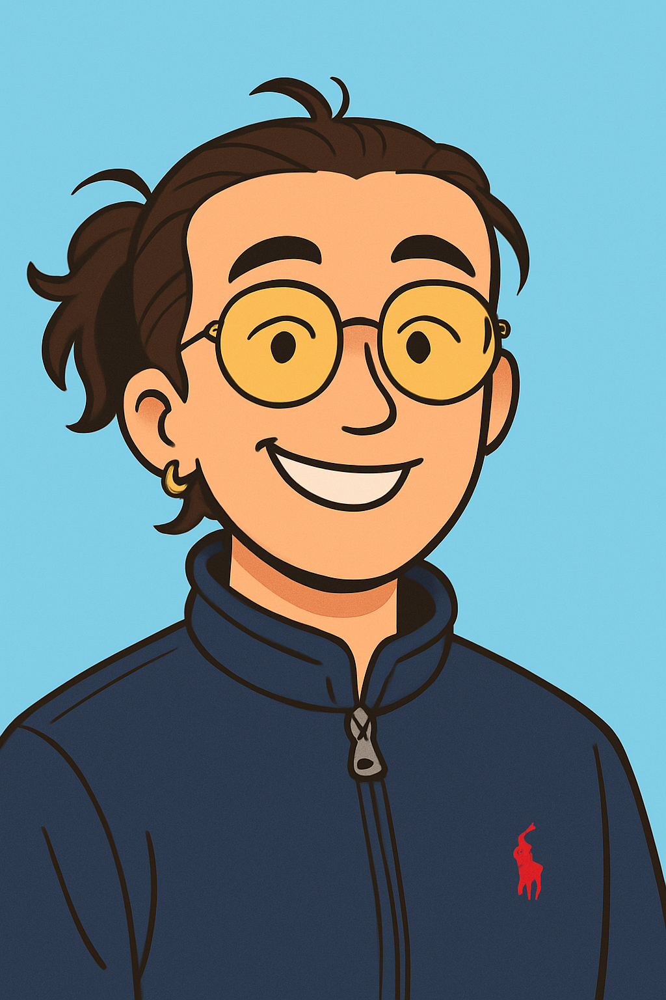
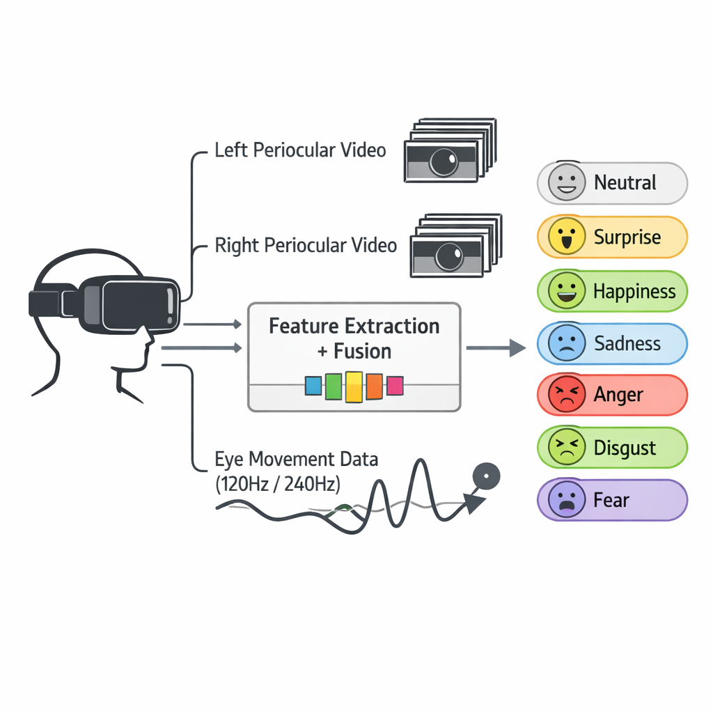
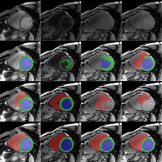
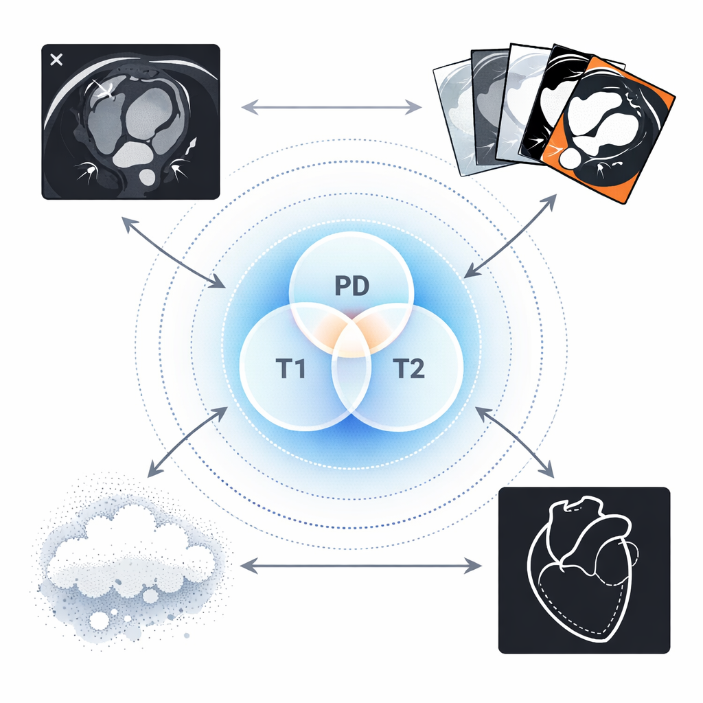
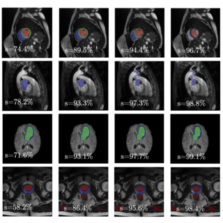
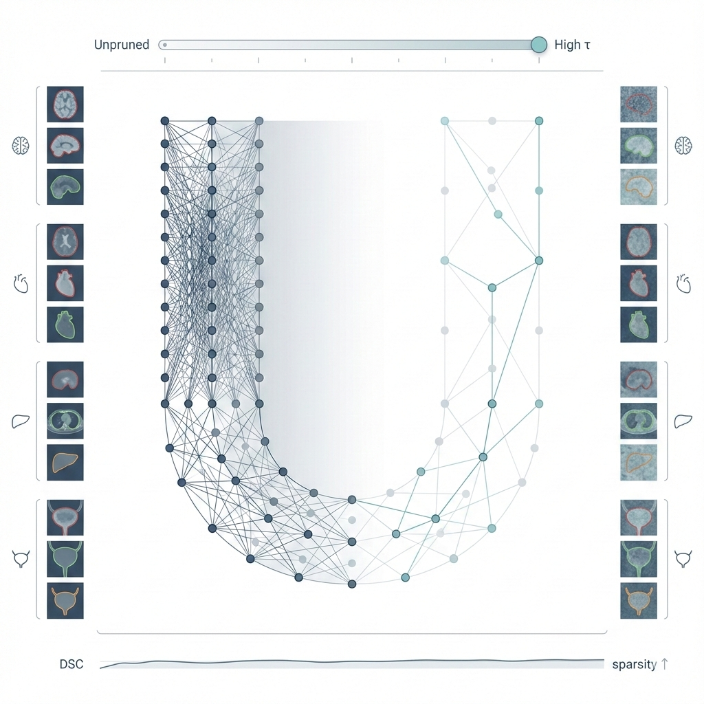

|
Tony Yang "AI is cool I guess" I build human-centered AI systems that expand what people can perceive, understand, and do. I collaborate with researchers around the world to build AI systems that create meaningful impact for people. I was a Marie Curie Fellow at IMDEA Networks, working with Prof. Dr. Joerg Widmer on efficient multimodal wireless sensing systems as part of the MSCA 6th Sense Project. Prior, I worked as a full-time AI research engineer at ImPhys TU Delft with Dr. Tao Qian, where I optimized AI models for medical imaging through advanced pruning techniques. I pursued my Master's at TU Delft, where I worked with Dr. Guohao Lan and Dr. Xucong Zhang on immersive emotion recognition systems using eye-tracking and computer vision.
|
 |
{kind=link}
News
|
ResearchMy research centers on building AI systems that expand human capabilities in the real world. I am interested in multimodal learning, computer vision, natural language processing, and agentic AI, especially where perception, reasoning, and decision-making come together. Across these areas, I care about systems that not only achieve strong technical performance, but also function reliably in practice and create meaningful impact for people. My long-term goal is to turn advances in AI into tools and systems that are genuinely useful, robust, and deployable. Some papers are highlighted. |

 |
Through the Eyes of Emotion: A Multi-faceted Eye Tracking Dataset
for Emotion Recognition in Virtual Reality
Tongyun Yang†, Bishwas Regmi†, Lingyu Du, Andreas Bulling, Xucong Zhang, Guohao Lan IMWUT/Ubicomp, 2025 paper / code / bibTex An eye-tracking dataset in VR, combining high-frame-rate periocular videos and high-frequency gaze data to enable accurate, multimodal emotion recognition. |
|
  |
Reverse Imaging: Any-Sequence Generalization for Cardiac MRI Segmentation
Yidong Zhao, Yi Zhang, Tongyun Yang, Maša Božić-Iven, Ayda Arami, Yuchi Han, Orlando Simonetti, Hui Xue, Petter Kellman, Sebastian Weingärtner, Qian Tao MICCAI & IEEE Transactions on Medical Imaging, 2025 paper / code / bibTex A physics-driven framework that estimates tissue properties (M0, T1, T2) from annotated cardiac MRI images using diffusion models, enabling physics-based synthesis of diverse unseen sequences for zero-shot generalization of segmentation models across different MRI contrasts. |
|
  |
Pruning nnU-Net with Minimal Performance Loss
Tongyun Yang, Yidong Zhao, Qian Tao MIDL, 2025 paper / code / bibTex Trained nnU-Net models contain substantial weight redundancy, with over 80% of weights removable through simple magnitude-based pruning while maintaining same performance across multiple medical segmentation tasks. |
ProjectsI enjoy developing AI-powered applications that make everyday life easier, more intuitive, and more efficient. |
|
|
ScholarHighlights⭐️
Tongyun Yang Browser Extension for Google Scholar, 2026 github / chrome web store A browser extension that makes Google Scholar more informative at a glance by surfacing venue-quality badges, author-role signals, and flexible ranking data sources directly in the browsing workflow. |
TeachingA selection of teaching and mentoring roles that I have enjoyed across courses and student support. |
|
Website adopted from Jon Barron |